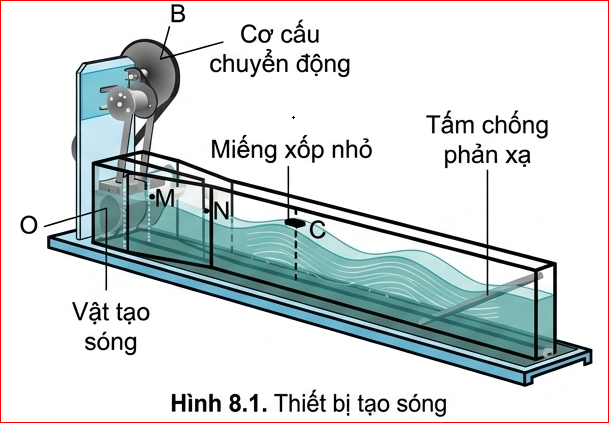
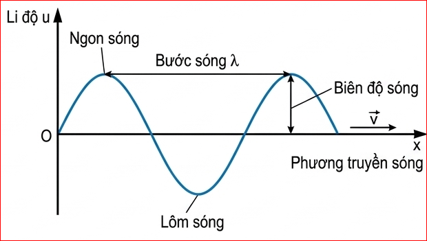
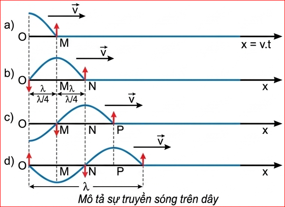
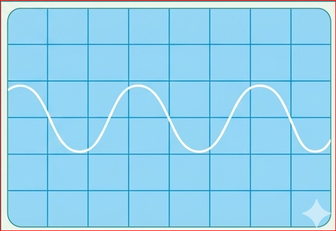

Trong cuộc sống hằng ngày, chúng ta thường gặp hay nghe đến nhiều loại sóng như: sóng nước, sóng âm, sóng vô tuyến, sóng biển, sóng địa chấn,... Vậy sóng được hình thành như thế nào và có những đặc điểm gì?
Chuẩn bị: Thiết bị tạo sóng mặt nước bằng kênh tạo sóng (Hình 8.1). Đề xuất cách đo các đại lượng đặc trưng như: biên độ sóng, bước sóng, chu kì của sóng và tốc độ truyền sóng trên mặt nước.
Tiến hành: Đặt một miếng xốp nhỏ C trên mặt nước. Khi quay đĩa D làm cho vật tạo sóng O dao động lên xuống, thì dao động đó được truyền cho các phần tử nước từ gần ra xa.
Kết quả: Quan sát qua thành kênh thẳng đứng, ta thấy mặt cắt của nước có dạng hình sin. Miếng xốp C dao động lên xuống tại chỗ, còn những biến dạng của mặt nước lan truyền đi từ nguồn sóng ra xa cho ta hình ảnh về sóng có trên mặt nước. O là nguồn sóng, nước là môi trường truyền sóng, đường thẳng OC là phương truyền sóng.
Đồ thị sóng được mô tả như trên Hình 8.2.

Hình 8.1: Thiết bị tạo sóng mặt nước

Hình 8.2: Đồ thị \( (u-x) \) của một sóng hình sin
Trong thí nghiệm Hình 8.1 các phần tử nước sát nguồn O dao động theo phương thẳng đứng. Nhờ có lực liên kết giữa các phần tử nước mà các phần tử nước ở điểm M lân cận điểm O dao động theo. Đến lượt các phần tử nước ở điểm N lân cận điểm M dao động. Ta nói có sự truyền dao động từ điểm này sang điểm khác tạo nên sóng mặt nước.
Như vậy, có hai nguyên nhân tạo nên sóng truyền trong một môi trường. Đó là nguồn dao động từ bên ngoài tác dụng lên môi trường tại điểm O và có lực liên kết giữa các phần tử của môi trường.
Hãy quan sát chuyển động của miếng xốp trong thí nghiệm Hình 8.1 và cho biết miếng xốp có chuyển động ra xa nguồn cùng với sóng không?
Trả lời: Miếng xốp không chuyển động ra xa nguồn cùng với sóng. Nó chỉ dao động lên xuống quanh một vị trí cân bằng cố định. Điều này chứng tỏ các phần tử môi trường chỉ dao động trong một phạm vi không gian rất hẹp, trong khi trạng thái dao động (sóng) được truyền đi rất xa.
Tốc độ truyền sóng chỉ phụ thuộc vào tính chất của môi trường truyền sóng không phụ thuộc vào tần số dao động của nguồn hay của các phần tử của môi trường có sóng truyền qua.
Giả sử có một sóng mặt nước hình sin lan truyền từ nguồn O theo phương Ox (Hình 8.3).

Hình 8.3: Mô tả sự truyền sóng trên dây
Trong đồ thị của sóng Hình 8.3d, các điểm nào trong các điểm M, N, P trên phương Ox dao động lệch pha \( \frac{\pi}{2} \), ngược pha, đồng pha với nhau?
Trả lời: Dựa vào khoảng cách và hình dạng đồ thị ở thời điểm \( t = T \) (Hình 8.3d):
Giữa các đại lượng \( \lambda \), \( T \) (hay \( f \)) có mối liên hệ sau đây:
Bài 1: Trên mặt hồ yên lặng, một người làm cho con thuyền dao động tạo ra sóng trên mặt nước. Thuyền thực hiện được 24 dao động trong 40 s, mỗi dao động tạo ra một ngọn sóng cao 12 cm so với mặt hồ yên lặng và ngọn sóng tới bờ cách thuyền 10 m sau 5 s. Với số liệu này, hãy xác định:
Giải chi tiết:
Bài 2: Hình 8.4 là đồ thị \( (u-t) \) của một sóng âm trên màn hình của một dao động kí. Biết mỗi cạnh của ô vuông theo phương ngang trên hình tương ứng với 1 ms. Tính tần số của sóng.

Hình 8.4
Giải chi tiết:
Quan sát đồ thị \( (u-t) \), ta thấy một chu kì hoàn chỉnh (từ lúc bắt đầu đến khi lặp lại trạng thái cũ) chiếm khoảng không gian là 3 ô vuông theo phương ngang.
Thời gian của một chu kì: \( T = 4 \times 1 \text{ ms} = 3 \text{ ms} = 3 \cdot 10^{-3} \text{ s} \).
Tần số của sóng là: \( f = \frac{1}{T} = \frac{1}{3 \cdot 10^{-3}} = 333,3 \text{ (Hz)} \).
Bài 3: Trong thí nghiệm ở Hình 8.1, nếu ta thay đổi tần số dao động của nguồn sóng thì đại lượng nào sau đây không thay đổi?
Đáp án đúng: D. Tốc độ truyền sóng.
Giải thích: Tốc độ truyền sóng chỉ phụ thuộc vào bản chất của môi trường truyền sóng (mật độ, nhiệt độ, tính đàn hồi,...), không phụ thuộc vào tần số hay chu kì của nguồn dao động.
Dùng đồ thị \( (u-x) \) của một sóng hình sin để nêu được các đại lượng đặc trưng của sóng.
Bài 1: Một người quan sát một chiếc phao trên mặt biển thấy nó nhô lên cao 10 lần trong 18 giây, khoảng cách giữa hai ngọn sóng kề nhau là 2 m. Tính tốc độ truyền sóng trên mặt biển.
Giải chi tiết:
Bài 2: Một đầu O của một sợi dây đàn hồi dao động với phương trình \( u_0 = 5\cos(4\pi t) \) (cm). Vận tốc truyền sóng trên dây là 24 cm/s. Tính bước sóng và khoảng cách giữa hai điểm gần nhau nhất trên dây dao động ngược pha.
Giải chi tiết:
Bài 3: Sóng vô tuyến truyền trong không trung với tốc độ \( c = 3 \cdot 10^8 \) m/s. Một đài phát thanh phát sóng với tần số 100 MHz. Tính bước sóng của dải sóng này.
Giải chi tiết: